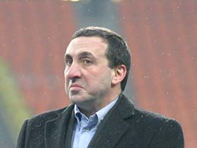

А судьи кто?
Ксендз Моисейка
"Дело Млынчака" так сильно уебало по всем нам шрапнелью, что теперь уже точно и не скажешь, кто прав, а кто - не очень. В дело вступили личные обиды, непоколебимая уверенность в собственной истине и желание пиздеть. Однако мы попробуем разобраться в данной ситуации, чтобы, так сказать, не становиться свидетелями проявления расизма на поле и за его пределами, а также коррупции, когда личные интересы отдельных людей подрывают доверие к соревнованиям под эгидой. Начнём с корней и, постепенно, доберёмся до самой верхушки, после чего сядем поудобнее на толстую ветку и отпустим из жопы наболевшее говно прямо вниз - на стоящих под деревом с биноклями зевак. Поехали.
Ты помнишь, как всё начиналось?
Йедреку Млынчаку 27 годков от роду. Это польский хавбек "MO4A HA nEPEnPABE", купленный 22 августа 2005-го у клуба "FC Fighters Kato" за 40 тысяч латов. В составе "мочи" он сыграл все 66 матчей своей карьеры, забив четыре мяча. Лучший поединок провел в Кубке колотиловки (старуха Шапокляк) против "KOKALLIKuHbI KAHuKy/IbI" (2:1) в рамках группового этапа, когда сыграл на 4 звезды. В первом туре нынешнего турнира в дуэли с "FC Kixa" Млынчак успел получить две жёлтых карточки за 40 минут, после чего отправился мыться в раздевалку и о триумфе своей дружины (2:0) узнал дней через пять. Следующий тур группового этапа Кубка колотиловки (Мамин Сибиряк) "мочевики" пропускали, а в дуэли с "FC MEKAY" поляк не мог сыграть из-за дисквалификации. Благополучно проебав половину зарплаты в одном из казино в столице Латвии, Млынчак собрал вещички и соскочил на неделю в Краков к тётке, будучи в полной уверенности, что до ответной встречи с "кексами" он "переправляющимся" не понадобится. Стало быть, можно бить баклуши, сводить знакомства с соседками и запивать гювеч ледяным пивом "велькопопопопопоповицкий козёл". Каково же было удивляние горемыки, когда руководство в приказном тоне сказало ему вернуться накануне встречи с "мекающими".
Трактат о регламенте
Слово "регламент" в словаре трактуется как "правила, регулирующие порядок какой-либо деятельности". В нашем случае "деятельность" одновременно подразумевает три вещи - футбольный турнир, желание доказать всем и вся свою конкурентоспособность и пустое провождение времени. Турнир на Кубок колотиловки (Мамин Сибиряк), то есть. В котором есть правила, и клубы этих правил придерживаются. Безусловно, каждый участник турнира, согласившийся подвергнуть риску название своего детища, прочитал на официальном сайте всё о его формате. Или, во всяком случае, имел такую возможность, но предпочёл разглядывать в интернете фотографии продаваемых автоматических мобилей и общаться с друзьями на модном ресурсе, не говоря уже о просмотре результативных выстрелов юного дарования российского бенди Скалкина. Однако, как говаривал тираспольский шериф Эмиль, пряча в багажник труп очередного хама и негодяя: "Незнание закона не освобождает от ответственности". Становясь участником турнира, вы автоматически соглашаетесь с тем, что играете по его правилам. Не говоря уже о том, что вы вкладываете огромные усилия в развитие массового футбола, борьбу с ксенофобией и пяточным клещём, становление некрасивых баб на судейском поприще и помощь цыганам, которым стало реально тяжело жить, как только железный конь пришёл на смену крестьянской лошадке.
Вопиющая хуйня
Естественно, в регламенте всего не оговоришь. Невозможно, например, запретить тренеру-конкуренту подглядывать за характеристиками лидеров твоей команды, пока ты идёшь в Максиму за тухлой котлетой. Невозможно оговорить правилами, что если ваш клуб не явится на матч, то ему будет засчитано техническое поражение со счетом 0:3, хотя хет-трик будет показывать 0:5. Невозможно, наконец, оговорить, что когда вы наблюдаете за матчами в окружении коллег, то нельзя завязывать им глаза, шумно пердеть, публично ковыряться в носу и разбивать мониторы конкурентов оранжевой деревянной палочкой в чёрную полоску. Все мы люди культурные и интиллигентные, поэтому всякую элементарную хуйню разжёвывать никому не надо. Пытаясь сделать регламент максимально простым и понятным, оргкомитет Кубка колотиловки внёс в раздел "дисквалификации" следующую формулировку: "Если в составе команды появляется дисквалифицированный футболист, команде засчитывается техническое поражение со счетом 0:3". Все мы знаем, что означает термин "техническое поражение", как знаем и то, что противнику в этом случае засчитывается техническая победа. И, что самое смешное и удивительное, с тем же результатом. Вообще-то, этот пункт был внесён в регламент исключительно для того, чтобы каждый тренер понимал - не надо ставить в состав дисквалифицированного футболиста, равно как и не вносить в заявку минимум двух латышей. Ибо, блять, это лишает всяких шансов на победу. Самое странное, что никто не нарушал данного правила о дисквалификации в течение трёх Кубков колотиловки, что оно действовало. Но Бабушка уже пролила на рельсы расплавленное олово...
Проёбанный наёк
Наставник "мочи" Паули Лампила сказал Млынчаку одеваться на матч, а на все его попытки объяснить, что это обернётся заслуженным поражением, лишь посылал на хуй и что-то бубнил себе под нос про индийского теннисиста Леандро Паэса. Примерно к 10-й минуте оргкомитет заметил на поле польского полузащитника, когда тот присел на травку, чтобы отдохнуть после сольного рейда, и тут же сигнализировал тренеру "мочи", что три безответных шайбы он уже пропустил, хотя счёт на табло всё еще напоминал два страусиных яйца. Лампила лишь развёл руками, признавая распиздяйство и немощь. Казалось бы, всё хорошо. Чего ж тебе ещё надо, хороняка? Но психологическая атака разнесла оргкомитет в клочья, за что ему, оргкомитету, безусловно, нет прощенья, и его стоит посадить на хлеб и нож. Да, мы долбоёбы и педорасы. Однако, если позволите, я хочу напомнить вам одну старую притчу про мальчика и покерный автомат...
Ключ к успеху
Дядя Валера был ебанут на всю голову. Не будем углубляться в привратности его судьбы, но к 43 годам он пришёл лишь с двумя интересами - рыбалка и азартные игры. Лещ, что называется, шёл, а вот борьба на деньги велась с переменным успехом. В последнее время дядя Валера пристрастился к покеру в игральных автоматах - куря одну сигару за другой, он ловил различные комбинации, после чего удваивал выигрыш до 128 жетонов и записывал. Это было его правило "Шесть лат, заебись, можно бомбить дальше", - думал муж, хуяча по два и покрикивая "Каре!", когда ему давало три короля и можно было обменять ещё две карты. Однажды в аппаратную зашёл веснушчатый мальчик - как раз в тот момент, когда дядя Валера пробил на 128, перебив четвёрку бубновым вальтом. "Надо пиздить", - уверенно сказал мальчик, и открыл дяде Валере туза на 256. Дядя Валера взвыл, но пробил во вторую карту слева и нашёл там семёрку пикей. Конечно, потом мальчика линчевали, дядя Валера кидал в него окурки и называл блядью, но выигранных денег уже не вернёшь. Сейчас, кстати, дядя Валера снова записывает на 128 и скоро откроет чебуречную на улице Алояс. Ну да хуй на него...
Совет да любовь
Друзья, тренеры, братцы-ребятушки, орлы мои сраные! Давайте вместе вырабатывать формулу будущего успеха! Давайте собираться коллегиально по окончании сезона на гала-вечере, когда можно на халяву выпить чужого пива, попиздеть о несправедливости судьбы и решить, что и как будет дальше. Давайте предлагать свои идеи в нужном месте в нужное время, когда вас услышат все, и большинством голосов уверенно идти к цели, делая Кубок колотиловки интереснее, зрелищнее и рентабельнее. Давайте не забивать на столь важные мероприятия, мотивируя это важной игрой лучшего специалиста мира и России, а также желанием поебаться в сей прекрасный вечер. Давайте, наконец, не будем забывать, что все мы порой ошибаемся, но не ошибается только тот, кто нихуя не делает. В отличие от меня. Даааааааааа.
А в заключении хочу сказать, что здесь очень хуёво. Хер стынет без соли, кормят здесь какой-то перловкой, каждый пытается куда-то пристроить своё хозяйство, а ссаные охранники половину любой передачи конфискуют, даже если она и не результативная. Вроде как и сидишь, а всё время приходится стоять, потому что коек мало, не говоря уже о шконках. Говно, одним словом. Из-за каких-то ебучих жигулей седьмой модели.
